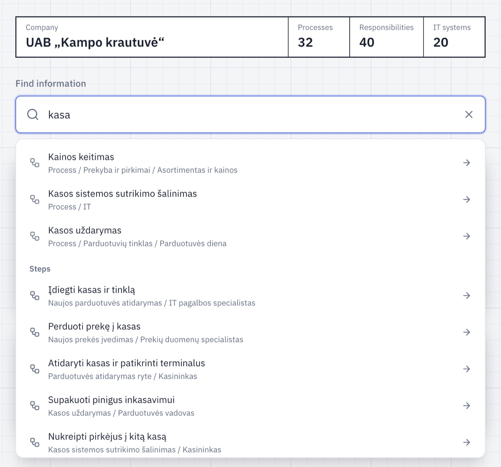
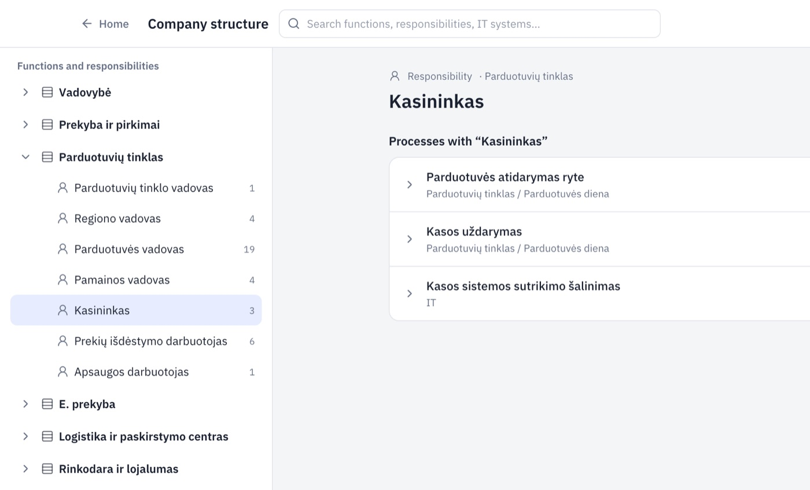
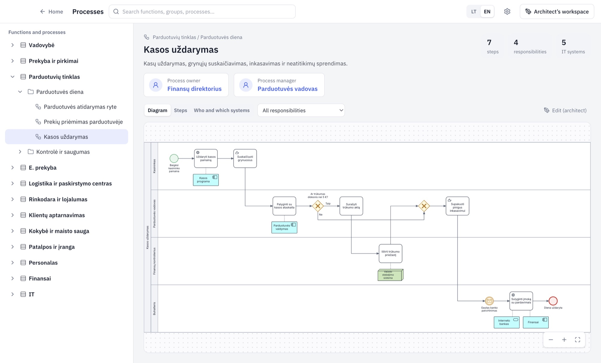

How to open your company’s processes
Someone has already drawn your company’s processes. You only need to open them and find your work. You can’t break anything – you can only look.
-
1
Check what you got
The message contains one of two things:
A folder link
A shared folder in OneDrive, Google Drive or on a network drive. Your company’s processes are kept there.
A .promodo file
A single file, for example Kampo krautuvė.promodo. Save it on your computer.
-
2
Install Promodo
Download the app for your computer and install it. The first time you open it, your computer asks you to confirm. That’s normal and takes a minute.
-
3
Open your company
If you got a file
- Double-click the .promodo file.
- If it asks for a password, enter the one your manager gave you.
- Click Install.
If you got a folder
- Make sure the folder is on your computer (OneDrive or Google Drive has synced it).
- In Promodo, click the gear at the top right – Settings.
- Under Library folder, click Choose another folder… and pick the folder you got.
Your company’s name appears at the top.
-
4
Find what you do
The quickest way is search. In Find information, type a word: your job title, a task, or a program you use. For example, kasa (till).

Click a row to open the process or step. Or click Company structure, then your area and your role. You see every process you take part in.

The cashier takes part in three processes. -
5
Open a process
The process page shows who is in charge (owner and manager), the diagram and the steps. In the All responsibilities list, pick your role – your steps are highlighted.

Tabs: Diagram, Steps, Who and which systems. To go back, click Home at the top left.
Something unclear? Ask the person who sent you the processes. They prepared them and can correct them. You can’t delete or change anything, so explore freely.
Forward this page to other users: arislovas.github.io/promodo-app/en/viewers.html